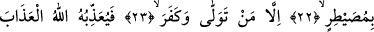
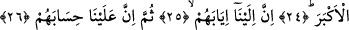

ONLARIN DÖNÜŞÜ
SADECE BİZEDİR
17. (İnsanlar) devenin nasıl yaratıldığına,
18. Göğün nasıl yükseltildiğine,
19. Dağların nasıl dikildiğine,
20. Yeryüzünün nasıl yayıldığına bir bakmazlar mı?
21. O halde (Rasûlüm), öğüt ver. Çünkü sen ancak öğüt vericisin.
22. Onların üzerinde bir zorba değilsin.
23. Ancak yüz çevirip inkâr edene gelince,
24. İşte öylesini Allah en büyük azap ile cezâlandırır.
25. Şüphesiz onların dönüşü sâdece bizedir.
26. Sonra onların sorguya çekilmesi de sâdece bize âiddir.
“Efelâ”daki hemze sorunun inkâr ve azarlama ifâde ettiğini gösteriyor. “Fâ” da
ifâdede olmayan ancak âyetin akışının gerektirdiği takdiren var olan bir kelime üzerine
atfı ifâde ediyor.
İbil veya ibl yapı olarak tekildir ancak çoğul anlamı ifâde eder oysa az önce işâret
ettiğimiz gibi kelimenin formu çoğul değildir. Bu kelime ism-i cem’i de değildir. Bu
kelimenin çoğulu -Kamus’un işâret ettiği üzere- “abal” şeklindedir. Bazı âlimlere göre
bu âyette geçen “ibil” ismi cem’i’dir yâni tekil gibi görünen ancak belli bir çokluğa
isim olarak verilen bir kelimedir. Bu kelimenin kendi harflerinden oluşan bir çoğulu
yoktur. Kelimenin tekili deve anlamına gelen “baiyr”, “naka” ve “cemel” şeklindedir.
Âyetteki “keyfe” kendisinden sonra gelen fiilden dolayı mansubtur ve bakma fiili ile
ilgilidir. Bu cümle ibil kelimesinden bedel olduğu için mecrurdur.
Şimdi bu açıklamaların ardından ifâdenin akışının gerektirdiği gizli olan cümleyi de
takdir ederek âyete mânâ verelim: Onlar öldükten sonra dirilmeyi, o gün olacak olan
şeyleri inkâr edip, bunların meydana getirilmesini Allah’ın kudretinden uzak bir ihtimal
olarak görüp de gözlerinin önüne dikilmiş olan deveye ibret nazarıyla bakmıyorlar mı?